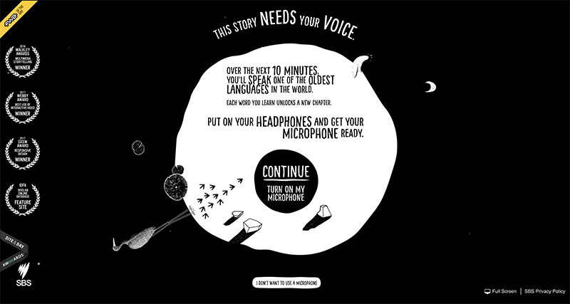

My Grandmother's Lingo
I loved that My Grandmother’s Lingo takes you through a story between grandmother and grandchild and teaches you one of the world’s most endangered Indigenous languages (Marra) along the way. While the input from the microphone seemed to not be working properly at times, it was a great idea to present a few words for the user to practice aloud in order to keep the storyteller’s language alive. What I also really enjoyed about this website is the beautiful, simple animated illustrations and the use of a colour palette that was limited to black and white. I also really liked hearing the storyteller’s calming voice as I progressed through the story.
One of the ways that the site could be improved is to add some kind of button at the end of the story where the user could return back to the home page. At the moment, the story ends with a black screen and most users probably just close the tab right after that instead of clicking on some kind of prompt to read more information about the Marra language.